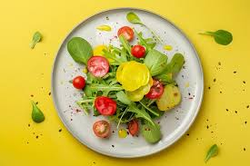
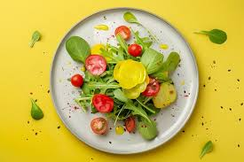
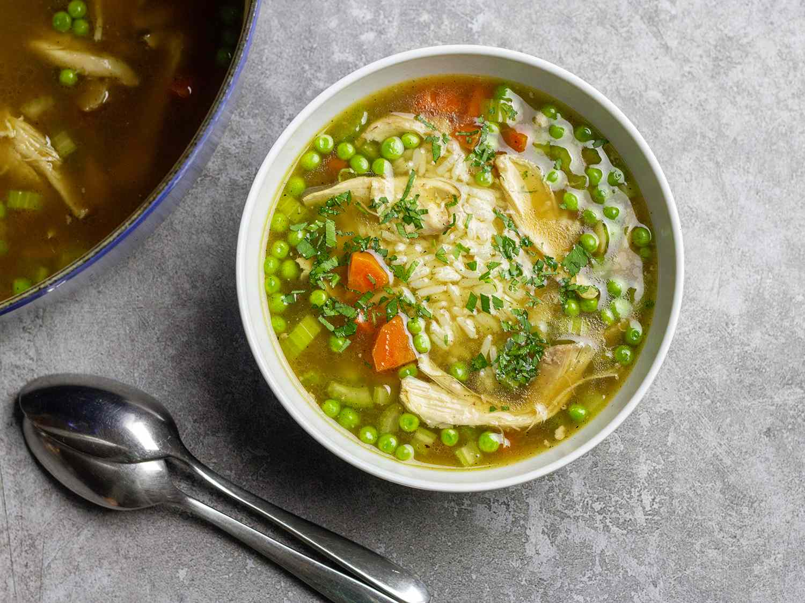
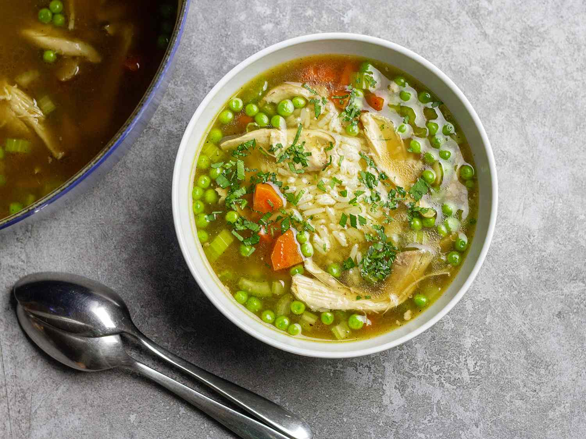

Plates
- Grilled Chicken Plate: Grilled chicken breast with two sides like mashed potatoes or roasted vegetables.
- Grilled Sustainable Salmon Plate: Salmon served with seasonal sides like quinoa salad or grilled vegetables.
- Grass-Fed Steak Plate: Grass-fed steak with sides such as mac and cheese, roasted Brussels sprouts, or sweet potatoes.
- Plant-Based Plate: Grilled portobello mushrooms or tempeh with sides like brown rice or greens.
Bowls
- Salmon Bowl: Grilled salmon served over greens or rice with veggies.
- Chicken Caesar Salad Bowl: Caesar salad with grilled chicken.
- Grilled Steak Bowl: Grass-fed steak served over grains and greens.
- Mushroom & Greens Bowl: Marinated mushrooms, greens, and veggies.
Salads
- Chicken Cobb Salad: Grilled chicken, avocado, bacon, egg, and blue cheese on a bed of greens.
- Asian Chicken Salad: Grilled chicken with cabbage, carrots, cilantro, and peanuts in sesame dressing.
- Mediterranean Salad: Fresh greens with feta, olives, cucumbers, and tomatoes. Add protein like salmon or chicken.
Sandwiches
- Grilled Chicken Club: Grilled chicken with bacon, lettuce, tomato, and aioli on ciabatta.
- Steak Sandwich: Thinly sliced steak with caramelized onions and horseradish mayo.
- Tuna Salad Sandwich: House-made tuna salad with lettuce and tomato on toasted bread.
Seasonal Soups
- Tomato Basil Soup
- Chicken Vegetable Soup
- Butternut Squash Soup (seasonal)

 

 
